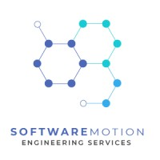
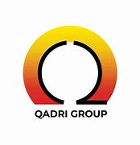

Bachelor of Mechatronics Engineering
2019 - 2023
National University of Sciences and Technology, Pakistan
- Major Coursework: Mechatronics and Robotics
- Minor Coursework: Machine Learning, Databases, Automotive Manufacturing Systems
- Thesis (Capstone Project): Assistive Feeding System - A robotic system to help individuals with eating
- Master's Courses (Audit): Artificial Neural Networks, Advance Embedded System and Biomedical Instrumentation
- GPA: 3.66/4.00
Rector's Gold Medal: Awarded for best capstone project in Department of Mechatronics Engineering
2x Distinguished Student Awards: Received for securing SGPA > 3.5 in 4 consecutive semesters
Pre-Engineering (Intermediate)
2017 - 2019
Government College University, Lahore
- External Grade: A+ Internal Grade: A
- Class representative junior and senior year
- Member of Robotics Club and Debate Society

Algorithm Engineer (Sensor Fusion)
Dec 2024 - Present
Software Motion
- Contributing to object and ego-motion modules of L-2 ADAS by fusing camera and radar data for ACC, AEB, and LCC
- Developed algorithms for lane lines fusion (Kalman Filters) and tracking (Track-to-Track Association) for LAC and LDW using C
Team Lead, Industrial Automation
Sep 2024 - Oct 2024
Cowlar Design Studio
- Led a team of 5 to automate fiber assembly processes using custom AI-powered robots, resulting in 4x throughput increase
- Directed client communication, weekly meetings, and task delegation to deliver mission-critical support for production robots
- Contributed to component integration, optimized control logic and data flow, driving improvements in automation performance
Houston Award: Awarded for exceptional leadership and performance in industrial autoamtion sector
Embedded Design Engineer
Jun 2023 - Aug 2024
Cowlar Design Studio
- Led prototype development of a fiber insertion robot with 250 microns precision in 15 days, leading to successful demo
- Collaborated with a cross-functional team of 50+ professionals, contributing to 5 Android applications using Kotlin and C
- Developed ”Sensor App” from scratch, integrating IMU, cameras and barcode scanners, currently deployed in smart carts
- Automated deployments with Docker and Shell based GitLab runners, improving various pipelines efficiency by upto 60%
- Created automation scripts for testing, and maintenance using Python and shell scripting, streamlining operational efficiency
Trailblazer: Honored with Trailblazer title after first self-presentation on annual design retreat

Leaders for Manufacturing Intern
Summer 2022
Qadri Group
- Conducted ergonomics analysis, tested fixtures designs to improve labor output for 3 parts, improving throughput by 33%
- Collaborated with multideciplinary team of 3 and presented feasibility reports and solutions, driving informed decision-making
Research and Development Intern
Summer 2021
National Centre of Robotics and Automation
- Restored a 3D-printed, parallel manipulator-based ”Upper Limb Prosthesis,” enhancing control for people with amputations
- Programmed linear actuators in C, enabling multi-grasp capabilities to support dexterity and usability for prosthesis users